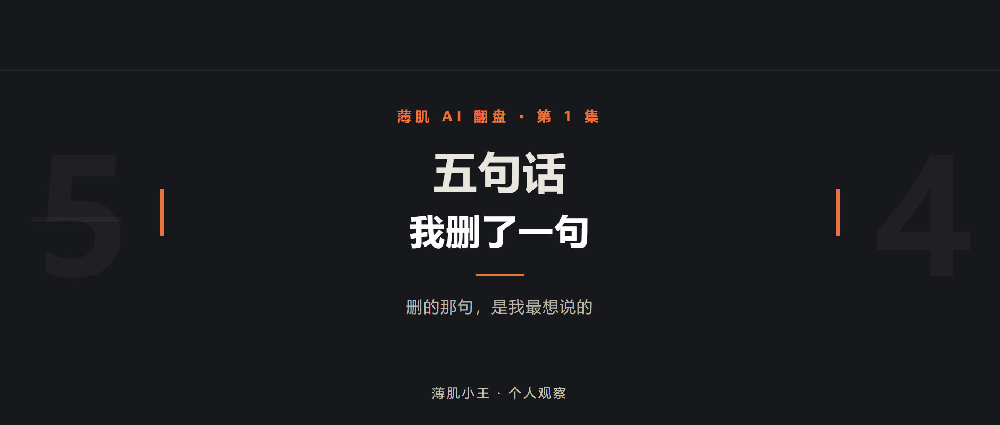
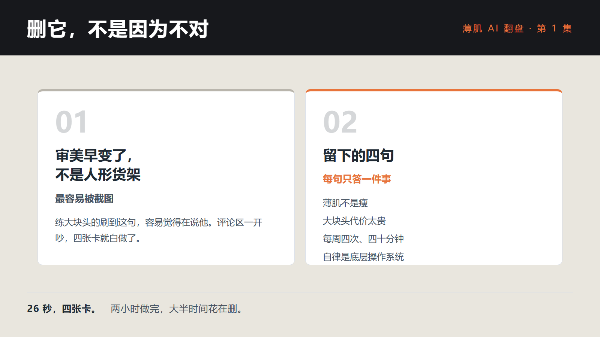

11 月 8 日中午，一条 26 秒的视频渲染完了。
竖版，9:16，四张卡，没出镜，也没配音。第一张「薄肌不是瘦」，第二张「大块头代价太贵」，第三张「每周四次、四十分钟」，最后一张只有一个句子——自律是我的底层操作系统。四张卡依次亮起来，26 秒，结束。2.8MB，躺在 renders 目录里，文件名带时间戳。
原本是五句。
删掉的那句是：审美早变了，不是人形货架。
那是我最想说的一句。
删它不是因为不对。
是因为它最容易被截图。
练大块头的刷到这句，容易觉得在说他。评论区一开吵，前面四张卡就白做了。
留下的四句，每句只回答一件事：我这样，能不能做到。
「薄肌不是瘦」——能。体脂低一点，线条就出来了，不用把生活让出去。
「大块头代价太贵」——每天两小时、顿顿称克数、社交归零。那不是自律，是全职。
「每周四次、四十分钟」——上班族扛得住。
最后一张不给方法，只给一句结论。它得靠前三张撑着。

从写脚本到成片，两个小时不到。
三步：写脚本、渲染、发。工具换过几个，脚本层换过，渲染底座也换过。三步没动过。
两个小时里，等渲染只占一小段。
剩下的时间都在删。
删到定下来，我就不再动。渲染，发。
薄肌也是这么练的。
每周四个晚上，四十分钟，练完洗澡睡觉。没请私教。不称克数。一次没断，三年。
我也说不清这算不算自律。
因为我一次都没「坚持」过。
到点，垫子铺开，人已经在上面了。不用商量。
所以这两件事不是谁帮了谁。
删掉的那句我没扔，还在脚本文件的最后一行。
下一条想用它，得先把脚本存成模板。
不然又得从零写一遍。
明天干这个。